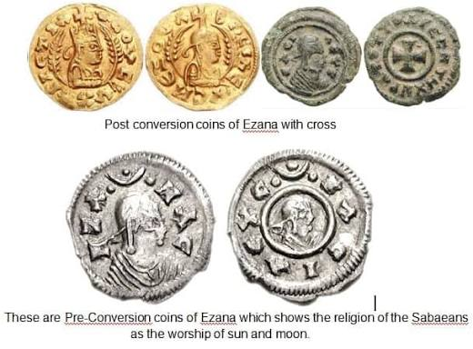

Aksumite Coinage: Kings, Symbols, and Long-Distance Exchange
Aksumite coinage provides a material record of rulers, royal portraiture, inscriptions, changing religious symbols, monetary practice, chronology, and connections with wider commercial networks.

User-supplied Aksumite coin montage. Individual coin attributions should be checked against published museum or numismatic catalogues when cited.
An important African coin tradition
Aksum developed an independent coinage tradition during Late Antiquity. Surviving issues include gold, silver, and copper-based coins associated with a sequence of Aksumite rulers.
Coins attributed to rulers including Endubis, Ousanas, Ezana, Kaleb, and others preserve names, portraits, titles, symbols, and inscriptions that can be compared with monumental texts and archaeological evidence.
Because coins were produced in multiples and circulated, they provide a different form of historical evidence from unique monuments such as royal inscriptions or monumental stelae.
Royal names and portraiture
Coinage allowed rulers to circulate political imagery in a portable form. Portraits, crowns, royal names, inscriptions, and symbols could communicate authority beyond the immediate setting of a palace or stone monument.
The interpretation of circulation still requires archaeological context. A surviving coin does not automatically reveal where it was originally used, how long it remained in circulation, or the social status of the person who handled it.
Symbols change over time
Aksumite coinage preserves changes in royal symbolism across different reigns and chronological phases.
Earlier issues can display disc-and-crescent imagery, while later Aksumite coins can display Christian crosses. These changes provide material evidence for transformations in the symbolism used by royal authority.
The symbols themselves should be described before their meaning is reconstructed. A crescent, disc, cross, crown, spear, or other motif is directly visible evidence. Its complete theological meaning may require comparison with inscriptions and other historical sources.
Ezana and changing royal symbolism
Coinage associated with the period of King Ezana is particularly important because the fourth century also preserves evidence for major changes in Aksumite royal religious representation.

User-supplied coin image associated with Ezana. Specific attribution and chronology should be confirmed against published catalogues before using individual coins as chronological proof.
Comparing coin types with inscriptions can help establish when particular symbols entered royal representation and whether different media changed at the same time.
Coinage and religious change
Christian symbols on later Aksumite coinage provide material evidence for Christianity becoming part of royal public representation.
That does not mean a coin alone can establish the religious beliefs of the entire population. Royal coinage primarily tells us about official representation.
Inscriptions, archaeology, architecture, chronology, and other independent sources must be brought into the discussion before broader conclusions are made about religious transformation.
Gold, silver, and copper
Different metals and denominations may have served different economic and political functions.
Gold coinage is particularly important for discussions of elite and long-distance exchange, while silver and copper-based issues provide other evidence for monetary activity and circulation.
Metallurgical analysis, coin weights, die studies, hoards, and documented archaeological findspots can help reconstruct how Aksum's monetary system developed over time.
Coins and long-distance exchange
Aksum's commercial world was connected to the Red Sea and wider maritime systems. Coinage forms one part of the evidence for a state participating in those networks.
Coins found away from the political center can help trace movement, but their presence must be interpreted carefully. Coins may travel through commerce, military activity, gift exchange, reuse, later collecting, or other processes.
Coins are not photographs of society
Royal coins tell us how authority chose to present itself. They do not directly measure what every subject believed, how wealth was distributed, or how frequently coins were used in ordinary transactions.
Numismatics becomes strongest when combined with archaeological context, inscriptions, metallurgy, settlement evidence, trade archaeology, and chronology.
Why coinage matters for chronology
Coin sequences can help establish the order of rulers and changes in royal imagery. They can also provide relative chronological anchors when compared with inscriptions and dated archaeological contexts.
This makes coinage one of the most valuable independent evidence streams for reconstructing Aksumite political and religious history.
Evidence: surviving coins, inscriptions, portraits, symbols, metals, weights, dies, and archaeological contexts.
Interpretation: arguments about monetary use, royal messaging, religious change, economic organization, chronology, and trade.
Reconstruction: circulation maps, detailed monetary systems, reign sequences, and economic models that extend beyond what any single coin directly demonstrates.